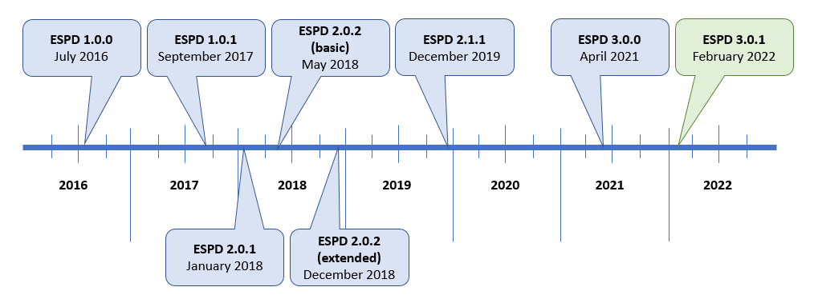

Introduction
Article 59 of the new Public Procurement Directive 2014/24/EC introduced a new concept, the European Single Procurement Document (ESPD) which is a self-declaration document intended for preliminary evidence in a public procurement procedure. By mapping out equivalent certificates between Member States, the ESPD replaces certificates issued by public authorities or a third party involved in a procedure. It is thus a valuable facilitator for cross-border participation of a greater number of potential operators in public procurement procedures and a valuable tool for integrating the European Single Market.
The European Commission (EC) has developed a data model and 'semantic assets' for the exchange of the ESPD between any Procurement stakeholder’s system. This Wiki aims to be a first landing point for organisations interested in using the model and assets in compliance with the Directive.
Road Map

v3.2.0 Release (May 2023)
This new version of the ESPD-EDM is a minor release which focuses on:
-
updating the data structure
-
updating the codelists files
-
updating the xml examples files
-
updating the schematron files for codelists validation
-
updating the online documentation
For more information regarding the release, please refer to the release notes.
The Directive
The model, named ESPD-EDM (standing for European Single Procurement Document - Exchange Data Model) is regulated by the above-mentioned Public Procurement Directive 2014/24/EC and the Commission Implementing Regulation (EU) 2016/7.
This Wiki is intended to facilitate the understanding of the model underlying the implementation of the ESPD Request and ESPD Response XML documents. For that purpose, examples and rules relating to how the content of ESPD XML document should look like and be processed are provided.